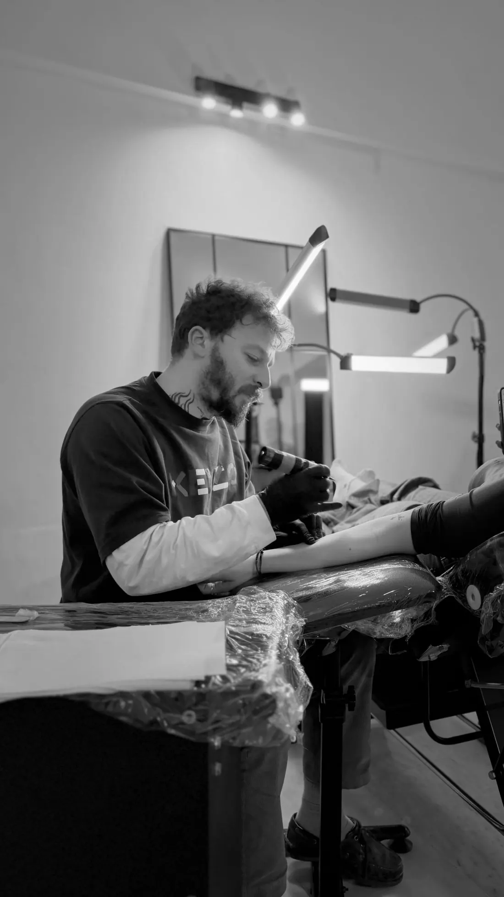
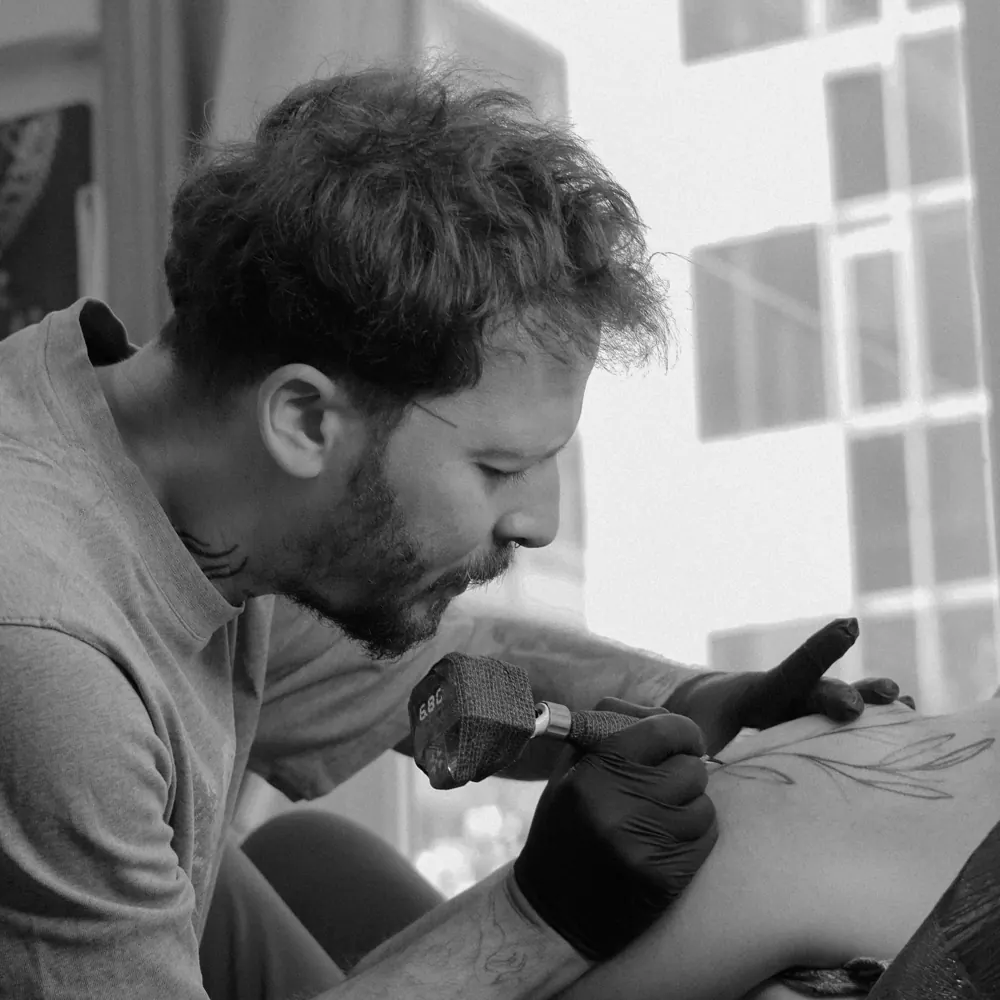
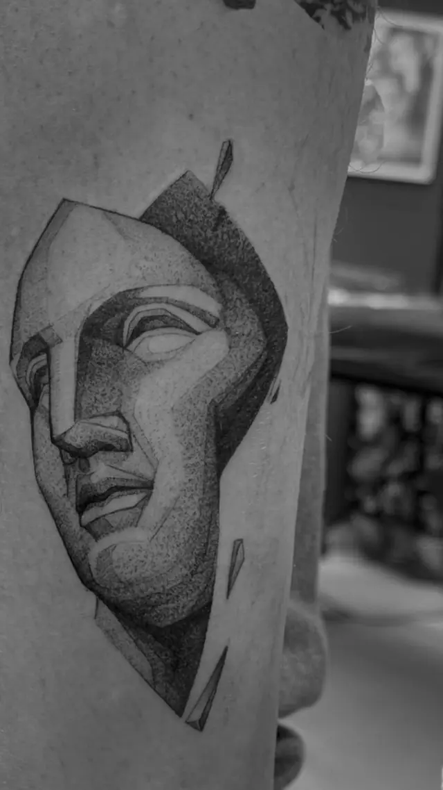
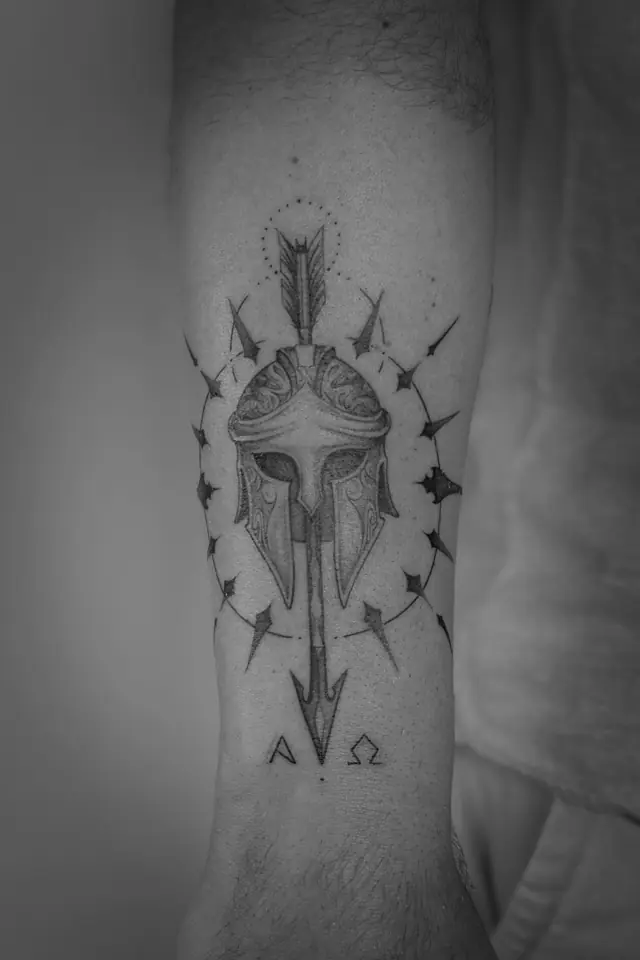

Home / The Studio
The studio
Precision, minimalism, intention.
A modern tattoo studio in Santorini, created by the team behind Athens Tattoo Studio and The Santttto — bringing a refined tattoo experience to one of the most iconic islands in the world.

Our philosophy
Inspired by the island.
The studio draws on Santorini itself — its volcanic textures, Cycladic architecture and timeless energy. Known for fine line and minimal tattoos, it welcomes all styles, always focused on custom work designed for each person.
Whether you’re visiting and want a spontaneous walk-in tattoo or planning a custom piece in advance, the studio combines creativity, hygiene and professionalism in a clean, high-end environment. From delicate minimal designs to bold concepts, every tattoo is created with care, respect for the craft and attention to detail.
Every tattoo carries
a piece of the island.
- 01Cycladic minimalism
- 02Ancient Greek history
- 03Raw natural textures



What the artists specialise in
Fine line & more.
Fine line tattoos, minimal designs, microrealism, custom concepts and contemporary blackwork — each designed around the individual and their story.
Walk in, or plan ahead.
Dekigala 137, Fira · open daily 11:00–22:00.